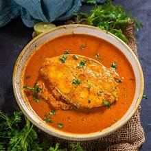
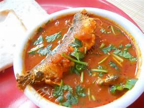
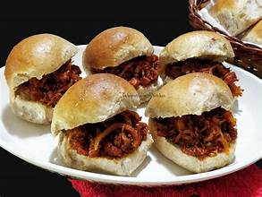
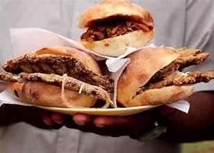
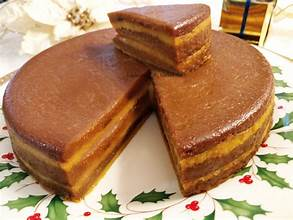
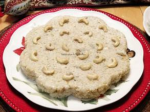
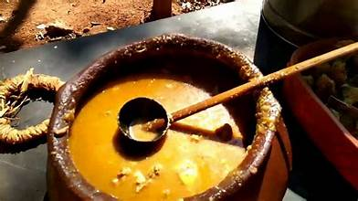

🍲 Traditional Delicacies of Goa
🍚 Staple Dishes

Goan Fish Curry – A tangy and spicy fish curry cooked with coconut, kokum, and aromatic spices.
Rice & Prawn Curry – Traditional prawn curry served with steamed rice, a staple meal in Goa.


Samarachi Kodi – A dry shrimp curry with tangy tamarind and coconut, enjoyed during the monsoons.
Sol Kadi – A cooling pink drink made from kokum and coconut milk, served as a digestive.

🥘 Signature Curries & Seafood Delights

Ambotik Fish Curry – A spicy and tangy fish curry with a hint of vinegar.
Vindaloo – A fiery Goan curry made with marinated pork, vinegar, and red chilies.


Chicken Xacuti – A coconut-based curry spiced with roasted ingredients.
Shark Ambotik – A tangy and flavorful curry made with shark fish, infused with Goan spices.

🥗 Savory Snacks & Street Foods

Poi Bread – Traditional Goan bread, soft and fluffy, enjoyed with various curries.
Choris Pav – Goan sausage served in a bun, a popular street food.


Cutlet Pao – Spiced meat cutlet served with bread, a local favorite.
🍮 Sweet Treats & Desserts
Bebinca – A rich layered dessert made with coconut milk, eggs, and sugar.


Dodol – A sweet made from coconut milk, rice flour, and jaggery.
Doce – A popular Goan sweet made from coconut and chana dal.


Nevri – A deep-fried pastry filled with coconut and jaggery.
🥤 Refreshing Beverages

Feni – A locally brewed alcoholic beverage made from cashew or coconut.
Kokum Juice – A tangy and refreshing drink made from kokum fruit.
Cashew Feni – A stronger version of feni made from fermented cashew apples.